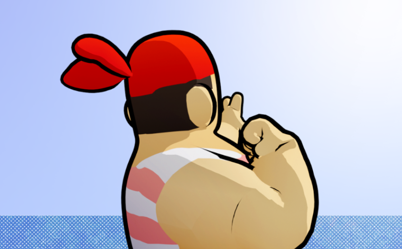

// Lvl 05 · 2020
A four-player pirate treasure hunt, built by a large team to simulate iterative development in a real workplace.

“Acquire all the main treasures indicated in each map to pass the level and pick up smaller treasures to improve your score. It won't be that easy though, as enemies both on land and in the sea (and maybe at your ship) stand in your way.”
The game was developed by a large team intending for it to be released. It also appeared in the November 2020 games showcase.
My role during development was as another programmer and developer specialising in shaders. I joined a month into the first half of the semester, when the team needed more developers to participate, as the busy second half of the semester meant many of the developers would be occupied with separate projects.
Shader development also needed help, as certain areas of the game required shaders to accentuate elements of gameplay. Taking this on eased the workload so other developers could dedicate more time to other crucial areas of development.